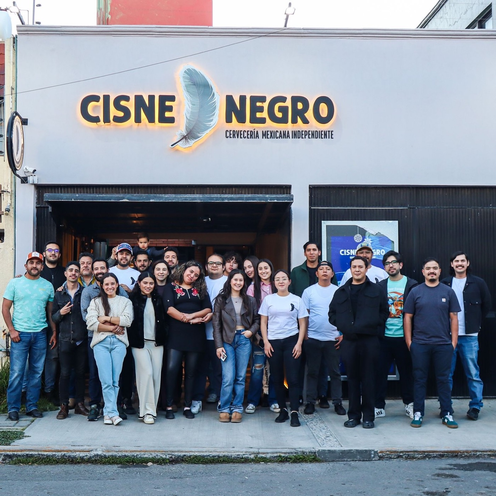
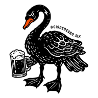

Pachuca, Hidalgo / Col. Periodistas
¡CUÉNTALO
EN EL CISNE!
Las buenas historias
empiezan en la barra.
Barril y comedorCerveza hecha aquí. Sin pretensiones.

CISNE NEGROCERVECERÍA INDEPENDIENTE
Pachuca, Hidalgo / Col. Periodistas
Las buenas historias
empiezan en la barra.